Springfield Village
Southern Gateway
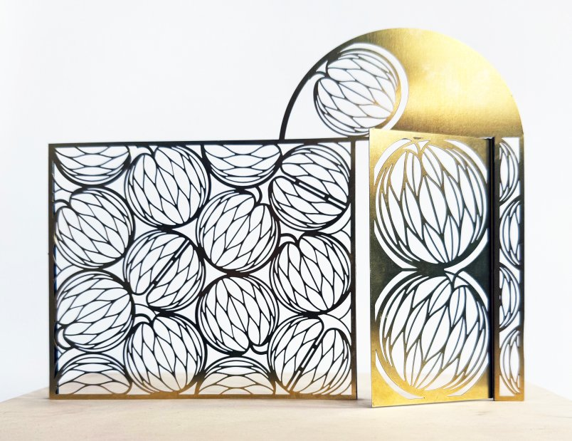
A physical model of the proposed gateway is at the AND office. The model can be handled — the gate opens by hand, and the proposal can be viewed from different angles.
A team of skilled, trusted collaborators.
I have built a team of skilled, trusted collaborators who have all worked extensively with me to manage and fabricate my previous public artworks.
Fabrication
Benson Sedgwick Engineering
Selinas Lane, Dagenham RM8
A regular collaborator and fabricator of my previous gates.
Powder coating
Bradleys Metal Finishers
49 Knightsdale Road, Ipswich IP1
A regular collaborator who painted and powder coated several of my previous commissions.
Structural engineering
Fold Engineering
4 Beau Street, Bath BA1
A regular collaborator who has carried out calculations for many previous projects.
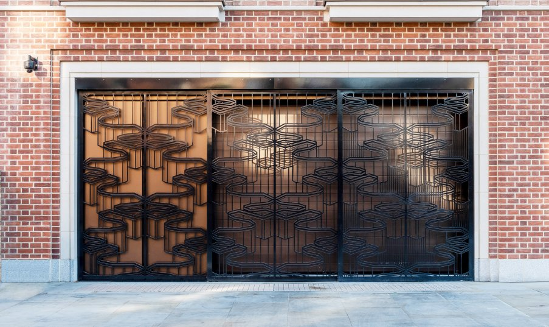
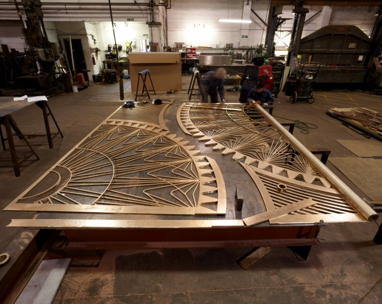
Inspiration.
My design responds directly to the history of the site, as well as the atmosphere and identity of the new development. By embedding some of the lesser-known stories from the past into the design, the proposal becomes meaningful and locally relevant.
I visited the Wandsworth archives, which holds a fascinating range of information about the history of the Springfield hospital in the form of newspaper cuttings, books and photographs. I discovered that between 1841 and 1948 the hospital ran the only working farm in London.
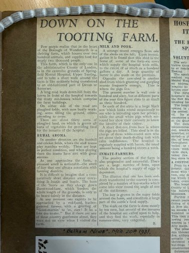
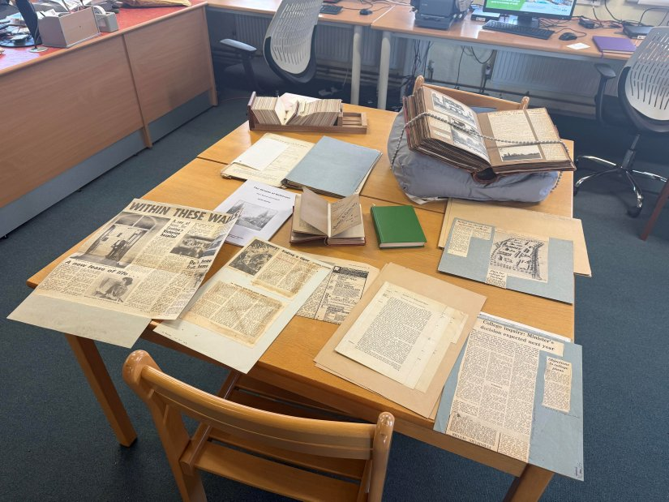
An archival journalist's account describes a visit to the hospital where patients were encouraged to engage in farmwork as part of its rehabilitation scheme.
The apple, and its segments.
I discovered that the farm included an orchard, which inspired me to use the form of an apple and its segments as a starting point for the design. The form is built from a series of stacked apples with a geometric lattice across each one — inspired by my drawings of cut apple segments and their seed casings.
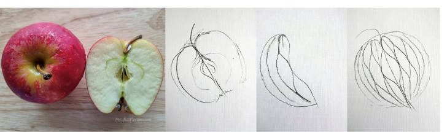
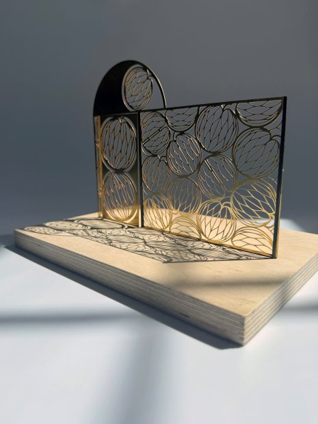
The brief states that the new development will foster a greater understanding of mental health and reduce associated stigma. Here, the apple serves as a symbol of health and wellbeing — reflecting the ambitions of the development as a place where barriers are broken down to create a more inclusive environment for those suffering from mental health issues.
The nutrients in apples — vitamin C, polyphenols, quercetin — are linked to brain health. The wholesome benefits of "an apple a day" have given rise to a popular mindfulness technique: APPLE is an acronym for five stages of dealing with unhelpful or intrusive thoughts and feelings — Acknowledge, Pause, Pull back, Let go and Explore. The final Explore stage encourages us to notice what is around us and then move our attention to something else. The design reflects this accessible approach to managing one's own mental health.
In the context of Streatham Cemetery, the theme also evokes the idea of new life growing from a place of remembrance — the seeds of new beginnings.
A welcoming landmark, not a railing.
The gate creates a welcoming landmark with a soothing, rhythmic design — contrary to one's expectations of a typical railing formed from verticals. The apple segments are arranged in a beautiful, pleasing geometry, reflecting the calming intentions of the theme.
The design aims to be sensitive to its environment, both in theme and appearance. The smooth, flowing rounded shapes are harmonious with the surrounding foliage of the cemetery and park, while the repeating stacked fruit reflects the brick formation of the old retaining wall adjacent to the work.
Visual associations
The geometric lattice within each apple segment operates on multiple visual levels to engage the imagination of the passerby. While the outline establishes the clear form of the fruit, the intricate internal linework evokes a broader vocabulary of natural shapes.
The delicate symmetry of the cutout voids mirrors the organic patterns found within the immediate cemetery gardens — the veins of a butterfly wing, the structured shell of a beetle. The geometry encourages a fluid association of ideas rather than presenting a literal illustration. These layers of association connect the specific heritage theme to the wider living ecosystem of the surrounding park.
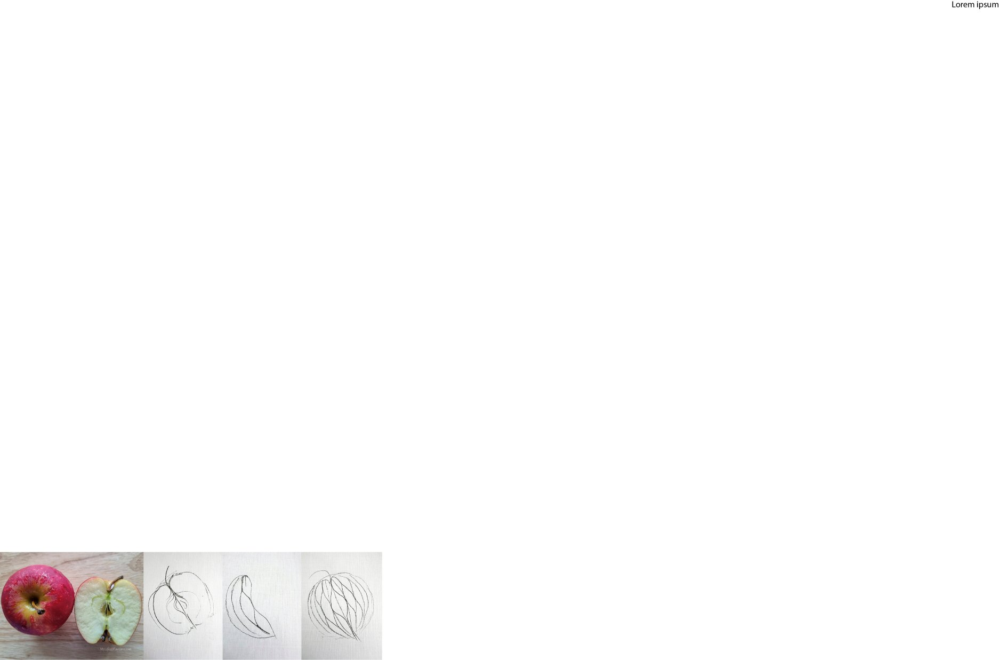
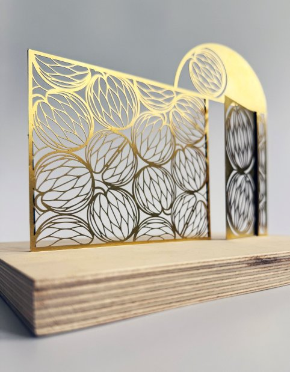
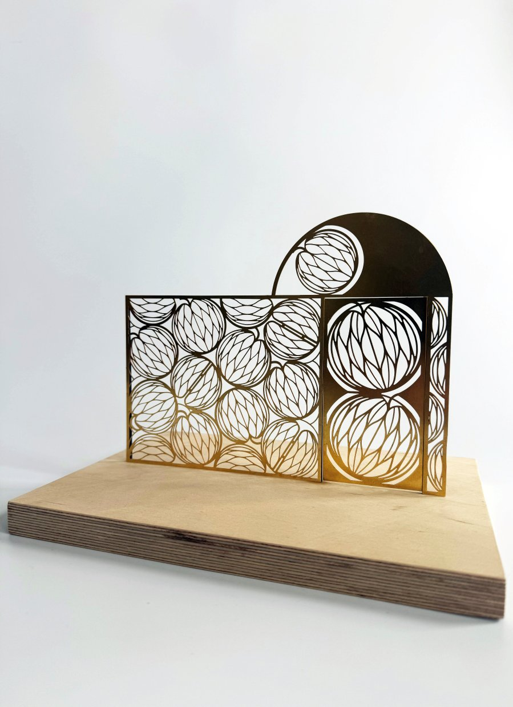
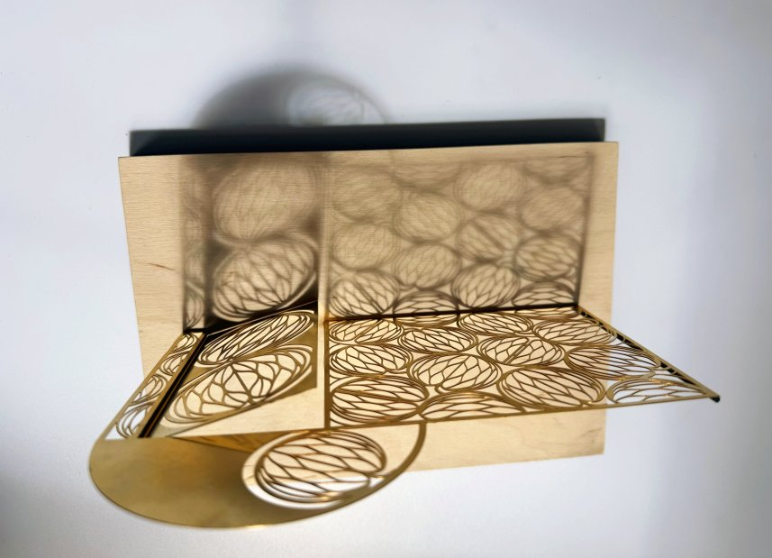
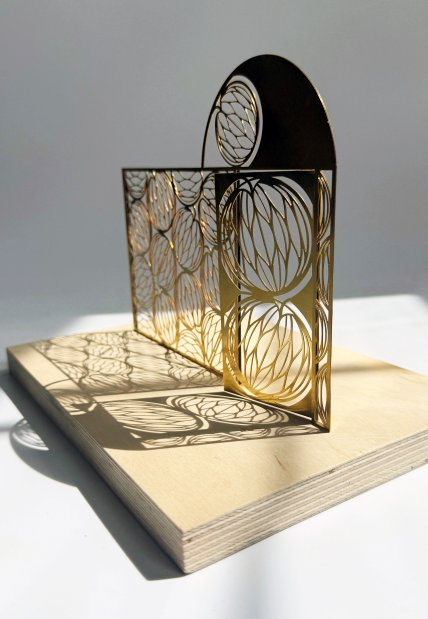
Materials, finishes and durability.
The gate and railings are to be fabricated from 8mm steel plate which is laser-cut, then zinc-sprayed and powder-coated. The difference in thickness between the frames and the laser-cut panels means the metalwork is very robust and will stand the test of time, yet retains an elegant, fine and lightweight appearance.
Artwork is applied with an architectural-grade polyester powder coating to the following specification: Powder Coat External Zinc Metal Spray System for Steel — 25+ Years Durability — C3 Environment; Degrease to SSPC-SP-1; Grit Blast to BS 7079 SA 2.5; Zinc Metal Spray to BS EN ISO 2063; Bondakote Primer.
Stakeholders will be invited to choose from a range of shades between green and black. The green reflects the theme — symbolising optimism and new growth — while remaining sensitive to the existing black and muted shades employed across the development.
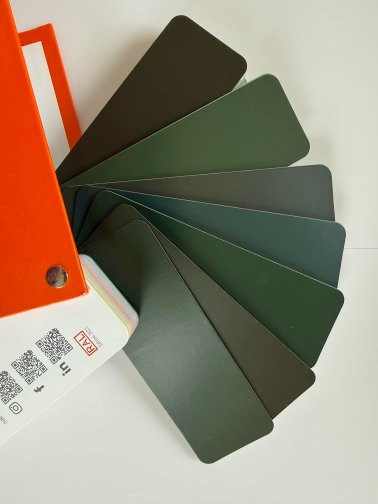
Example of the colour range for the powder coat in a gloss finish. As with all stages of the commission, the final shade is a collaborative decision.
Permeability
The design allows plenty of visibility through the apple-segment voids, with solid sections at the edges to ensure robustness and stability. As with all my barrier and gate-based artworks, the design adheres to a 100mm maximum aperture at any given point.
Locking
The quote includes provision of door furniture — handle, lock and key. A fob access system can be incorporated if desired.
Ecology
An opening in the railing allows for hedgehogs to pass, preserving the boundary as a movement corridor for local wildlife.
Wayfinding & signage
The text "Springfield Park" is included in the arch above the gate — engraved and infilled across both sides. Access hours will be displayed on a plaque near the gate.
Lighting
LED uplighters to be installed in collaboration with the Team to enhance the shadow play shown in the physical model.
The gate, in three dimensions.
Below is a rotatable model of the proposed Southern Gateway. Drag to orbit. The annotated dimensions and steel specifications are listed alongside, since they cannot rotate with the model.
Scalability
The railing is designed to reach the same level as the original brick retaining wall. The arch and height of the railing can be scaled up without compromising the design, by increasing the number of rows in the stacked apple pattern and extending the arch outwards.
Delivery and project management.
My project management approach is based on good communication and collaboration. This means we can carry out rigorous quality control and achieve the artistic vision set out in the proposal.
Communication & stakeholder alignment
I work in a collaborative manner — ensuring that all stakeholders, including the Springfield Village project team, Barratt London and Lambeth Council, are kept up to date with developments. I share weekly updates (or as frequently as required) via email and attend meetings throughout. All aspects of the process are transparent; stakeholders are invited to inspect, comment and feed back on each stage.
Fabrication management & QA
I work closely with my fabricator to ensure the work is produced precisely in line with the vision, reporting back to stakeholders. I hold regular workshop inspections during fabrication to review material quality, laser cutting and welds, and the application of the finish. I act as the direct conduit between workshop and client, providing photographic documentation of fabrication milestones before sharing any drawdowns of incurred costs.
Milestone & schedule management
I manage the project strictly against the client's timeline, establishing internal deadlines to ensure we remain on track for the January 2027 installation.
Project programme
| Milestone | Date |
|---|---|
| Design development | 8 Jun – 13 Jul |
| Consultation sessions with Friends of Streatham Cemetery | — |
| Draft design submitted | 13 Jul |
| Further design development per stakeholder feedback | — |
| Structural engineering calculations | — |
| CAD drawings ready for fabrication | — |
| Artworks signed off | 10 Aug |
| Order materials | Aug – Dec |
| Fabrication period | — |
| Community engagement workshops with students | Sep / Oct |
| Stakeholders invited to visit workshop | — |
| Finish applied | Jan 2027 |
| Delivery and installation | Jan 2027 |
| Sign off | Jan 2027 |
Two phases of community engagement.
I propose a social impact programme split into two distinct phases — enabling connection with different groups. The first focuses on heritage preservation through consultation with the Friends of Streatham Cemetery; the second provides professional development for young creatives within the borough.
The design phase — with the Friends of Streatham Cemetery
The Friends of Streatham Cemetery are key to this community engagement: they carry the stories, history and heritage of the place. My plan is to run a series of guided walks and listening sessions along the boundary wall — talking through the motifs, heritage and the small movements of nature I have looked to embody. Their input will help shape some of the symbolism and detailing of the proposed gateway. Ultimately, I want the group to leave knowing the gateway honours the character of the place they have stewarded.
The fabrication phase — with local art and design students
This strand is for sixth-form Art and Design students and Art Foundation students. My intention is to leave them with a legacy of skills and experience drawn from the technical and material processes used to design the gate and railing. Each student will design their own gate, starting with a pen drawing on paper and resulting in a physical miniature model laser-cut in brass. In the context of advancements in AI, young people are worried about the job market and it has never been a more important time to develop one's own creativity.
During the first session, I will introduce the project by showing how my drawings have resulted in large-scale permanent metalwork artworks and gates. Students will then create black-and-white pen drawings based on high-contrast photographs taken in the local area, with techniques to help them design with structural integrity in mind so that their drawings can be successfully laser-cut. These drawings will be vectorised (digitised) — a process they will learn during the session if computers and the Adobe suite are available, otherwise I will do this myself. The students' drawings will then be laser-cut to create miniature gate models.
During the second session, students will each receive their laser-cut brass panel which they will integrate into a larger model framework. They will learn how to cut and manipulate sheets of styrene, and explore other materials such as carbon-fibre dowling, acrylic and flock — which I will provide as part of the workshop.
My objective is to ensure these students leave knowing that creative practice is a valued and rigorous skill — that they can take an idea from brief to finished object and hold a real piece of work in their hands, alongside a process they can use again.
Local sixth forms and colleges.
Potential educational establishments I will approach, prioritised by proximity to the site and the relevance of their Art and Design provision:
Bishop Thomas Grant School Sixth Form
Belltrees Grove, Streatham, SW16. The closest Streatham sixth form to the cemetery itself, with an established A-Level Art and Design department and direct progression links to UAL and Central Saint Martins.
La Retraite Sixth Form
14 Atkins Road, Clapham Park, SW12. The closest Lambeth sixth form with an A-Level Art and Design programme.
Lambeth College (South Bank Colleges)
Clapham Common South Side, SW4. The borough's main further-education provider, delivering UAL Level 1, 2 and 3 Diplomas in Art and Design. Brings a different cohort to the project — vocational and Foundation-level students — broadening the social reach of the engagement.
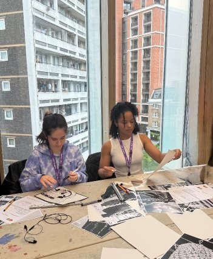
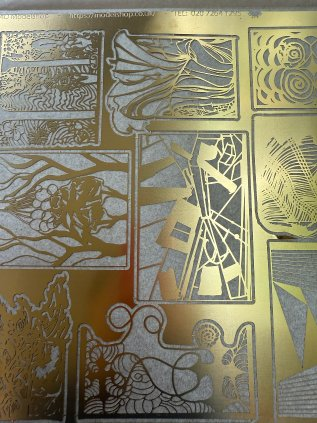
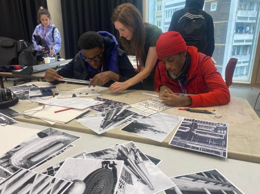
Photographs from a similar workshop held at Westminster College for the gate designed for the West End Gate development in Edgware Road.
Budget.
| Artist fee | Amount |
|---|---|
| Research, project management, design development & edits, engagement, liaison | £18,000 |
| Incurred costs | Fee |
|---|---|
| Materials, fabrication, engraving, plaque, delivery and installation Includes standard gate furniture embedded discretely into the design: handle, latch, lock and fixing point. | £36,335 |
| CAD drawings and calculations | £2,000 |
| Engagement materials | £800 |
| Contingency costs (10%) | £3,915 |
| Total incurred costs | £43,050 |
| Total | £61,050 + VAT |
Risk and feasibility statement.
- Material / fabrication delays (e.g. steel lead times)
- Pre-ordering materials immediately upon contract signing in August; building a 3-week buffer into the August–December fabrication window.
- Site interface mismatch (e.g. the 2.3 m brick wall or new railings vary slightly from drawings)
- Conducting a physical site survey and laser-measure of the Southern Gateway location prior to finalising drawings. Connection posts detailed with a 50 mm tolerance allowance to adapt to minor on-site discrepancies.
- On-site installation issues (e.g. weather or access)
- Providing full Risk Assessments and Method Statements (RAMS) to Barratt London in November, well ahead of the January 2027 installation.
- Structural integrity and compliance (e.g. wind loading on the solid architrave)
- Collaborating with Fold Engineering to run formal structural calculations. The gate frames and connection posts will be engineered to withstand high wind loads and heavy daily use before submission for sign-off.
- Coating and finishes failure (e.g. early corrosion or peeling adjacent to park foliage)
- High-grade shot-blasting, hot zinc spray and architectural powder coating process via Bradleys Metal Finishers. Maximum weather protection; prevents rust bleeding onto the historic brick piers.
- On-site installation and logistical conflicts (e.g. restricted access, severe winter weather)
- Submitting a detailed RAMS to the principal contractor in November. Installation within a managed cordon during low-traffic hours, using compact lifting gear to minimise site disruption.
- Public safety and aperture trapping (e.g. climbing or finger trapping within the apple lattice)
- Verifying all segment voids during the digital drafting stage to ensure compliance with anti-trap standards. Maximum 100 mm aperture sphere clearance maintained across the entire framework to prevent child injury.
Understanding the brief.
My design approach aligns with the core objectives of the brief through three distinct stages.
Historical and institutional context
The brief emphasises the role of the development in reducing mental-health stigma and celebrating the mission of St George's Mental Health NHS Trust. By researching the Wandsworth archives I uncovered the history of the working farm and orchard that once occupied the site. Using the apple as the central design motif directly honours this history of agricultural rehabilitation. The form connects the heritage of the land to the health goals of the new village.
Physical and ecological integration
The proposal respects the technical parameters set out by the Landscape Architect. The total width of 3,458 mm is carefully distributed between the main gateway, the section of railings and the connection posts. The railing heights match the original brick wall; the architrave extends upward to incorporate the engraved "Springfield Park" wayfinding text. The repeating pattern of stacked fruit mimics the rhythm of traditional brickwork rather than standard vertical railings. Security needs are met through built-in locking mechanisms, and the 100 mm maximum aperture aligns with health-and-safety barrier specifications. On an ecological level, the inclusion of a 130 mm ground opening preserves the boundary as a movement corridor for local wildlife.
Social impact and community legacy
A permanent gateway should reflect the input of those who live nearby and care for the surrounding spaces. The brief requires meaningful local social impact — integrated into both the design and fabrication phases. Collaborating with the Friends of Streatham Cemetery during design development ensures that the symbolism respects their ongoing stewardship of the area. During fabrication, the workshops with local sixth-form and college art students teach participants each stage of the design process — from sketch to physical prototype.
Sustainability statement
The production model for the Southern Gateway prioritises environmental responsibility by focusing on localised supply lines. Keeping the entire manufacturing footprint within London and the East of England reduces transport emissions and supports the local economy.
Carbon reduction & local sourcing. The physical proximity between my studio and Benson Sedgwick Engineering in Dagenham (a 20-minute cycle) allows for low-impact transport during fabrication. Components do not require long-distance freight or international shipping.
Material efficiency & circularity. The geometric apple lattice will be programmed digitally using CAD software before laser cutting — maximising sheet-metal efficiency and minimising raw-steel scrap. Steel offcuts are collected and processed through local metal recycling streams. The hot-zinc-spray-plus-architectural-powder-coating specification ensures a life expectancy of several decades, reducing the need for premature replacement, chemical maintenance treatments or future structural interventions.